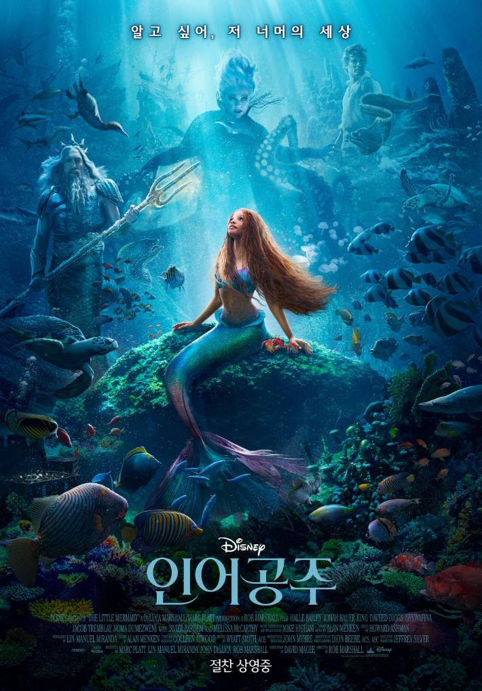

범죄도시3
★ 7.83/10.0
645만명
대체불가 괴물형사 마석도, 서울 광수대로 발탁! 베트남 납치 살해범 검거 후 7년 뒤, ‘마석도’(마동석)는 새로운 팀원들과 함께 살인사건을 조사한다. 사건 조사 중, ‘마석도’는 신종 마약 사건이 연루되었음을 알게 되고 수사를 확대한다. 한편, 마약 사건의 배후인 '주성철'(이준혁)은 계속해서 판을 키워가고 약을 유통하던 일본 조직과 '리키'(아오키 무네타카)까지 한국에 들어오며 사건의 규모는 점점 더 커져가는데... 나쁜 놈들 잡는 데 이유 없고 제한 없다. 커진 판도 시원하게 싹 쓸어버린다!

인어공주
★ 6.48/10.0
60만명
아틀란티카 바다의 왕 ‘트라이튼’의 사랑스러운 막내딸인 인어 ‘에리얼’은 늘 인간들이 사는 바다 너머 세상으로의 모험을 꿈꾼다. 어느 날, 우연히 바다 위로 올라갔다가 폭풍우 속 가라앉는 배에 탄 인간 ‘에릭 왕자’의 목숨을 구해준다. 갈망하던 꿈과 운명적인 사랑을 이루기 위해 용기를 낸 ‘에리얼’은 사악한 바다 마녀 ‘울슐라’와의 위험한 거래를 통해 다리를 얻게 된다. 드디어 바다를 벗어나 그토록 원하던 인간 세상으로 가게 되지만, 그 선택으로 ‘에리얼’과 아틀란티카 왕국 모두 위험에 처하게 되는데… 바닷속, 그리고 그 너머 아름다운 꿈과 사랑의 멜로디가 펼쳐진다!

분노의 질주: 라이드 오어 다이
★ 7.91/10.0
174만명
돔(빈 디젤)과 그의 패밀리 앞에 나타난 운명의 적 단테(제이슨 모모아). 과거의 그림자는 돔의 모든 것을 파괴하기 위해 달려온다. 단테에 의해 산산히 흩어진 패밀리들은 모두 목숨을 걸고 맞서야 하는 함정에 빠지고 마는데.. 달리거나 죽거나, 그들의 마지막 질주가 시작된다!

가디언즈 오브 갤럭시: Volume 3
★ 9.39/10.0
411만명
‘가모라’를 잃고 슬픔에 빠져 있던 ‘피터 퀼’이 위기에 처한 은하계와 동료를 지키기 위해 다시 한번 가디언즈 팀과 힘을 모으고, 성공하지 못할 경우 그들의 마지막이 될지도 모르는 미션에 나서는 이야기

슈퍼 마리오 브라더스
★ 8.41/10.0
237만명
뉴욕의 평범한 배관공 형제 '마리오'와 ‘루이지’는 배수관 고장으로 위기에 빠진 도시를 구하려다 미스터리한 초록색 파이프 안으로 빨려 들어가게 된다. 파이프를 통해 새로운 세상으로 차원 이동하게 된 형제. 형 '마리오'는 뛰어난 리더십을 지닌 '피치'가 통치하는 버섯왕국에 도착하지만 동생 '루이지'는 빌런 '쿠파'가 있는 다크랜드로 떨어지며 납치를 당하고 ‘마리오’는 동생을 구하기 위해 ‘피치’와 ‘키노피오’의 도움을 받아 '쿠파'에 맞서기로 결심한다. 그러나 슈퍼스타로 세상을 지배하려는 그의 강력한 힘 앞에 이들은 예기치 못한 위험에 빠지게 되는데...! 동생을 구하기 위해! 세상을 지키기 위해! '슈퍼 마리오'로 레벨업 하기 위한 '마리오'의 스펙터클한 스테이지가 시작된다!

트랜스포머 비스트의 서막
★ 7.24 /10.0
28만명
전 우주의 행성을 집어삼키는 절대자, ‘유니크론’의 부하 ‘스커지’는 ‘테러콘’들을 이끌고 지구에 당도한다. 그에 맞서기 위해 지구에 정체를 숨기고 있던 트랜스포머 ‘오토봇’ 군단이 모습을 드러내고 또 다른 트랜스포머 진영인 ‘맥시멀’과 힘을 합친다. 옵티머스 프라임이 이끄는 ‘오토봇’과 옵티머스 프라이멀을 중심으로 한 ‘맥시멀’. 모두의 운명을 건 그들의 압도적 전투가 시작된다!

극장판 짱구는 못말려: 동물소환 닌자 배꼽수비대
★ 8.38/10.0
71만명
어느 날 ‘짱구‘와 동갑내기인 5살 ‘진구’를 데리고, 짱구 가족을 찾아온 수상한 여성. 서로의 아이가 바뀌었다는 충격적인 소식을 전한다. 하루아침에 닌자 가문의 후계자 ‘진구’로 불리게 된 짱구는 ‘부리부리 엉덩이 분신술’로 닌자 유치원을 초토화시킨다. 한편, 떡잎마을에 남겨진 진구와 짱구 가족은 짱구를 찾으러 닌자 마을로 향하고, 세상의 중심인 ‘지구의 배꼽’이 흔들리기 시작하며, 지구가 붕괴될 위기에 처하는데… 과연 짱구는 세상을 지켜낼 수 있을까?!

아기공룡 둘리 : 얼음별 대모험 리마스터링
★ 8.65/10.0
9.4만명
아기공룡 둘리는 1억 년 전 거대한 빙산 조각에 갇혀 엄마와 헤어지게 되고 그 안에서 깊은 잠에 빠지게 된다. 어느 날 한강으로 빙산 조각이 흘러 들어오게 되고 조금씩 얼음이 깊은 잠에서 깨어난 둘리는 우연히 쌍문동에 사는 소시민 고길동의 집에 머물게 되는데, 호기심 많고 말썽꾸러기인 둘리로 인해 고길동의 집은 그날부터 하루도 맘 편할 날이 없다. 거기에 ‘공포의 공갈 젖꼭지’ 희동이, 외계인 도우너, 귀부인 타조 또치, 가수지망생 마이콜이 가세하고 이들은 타임 코스모스를 타고 빨리 어른이 되기 위해 미래로 여행을 떠난다. 그러나 타임 코스모스의 작동실수로 이들은 우주의 미로 속, 얼음별로 향하게 되고 그곳에서 둘리는 꿈에 그리던 엄마를 만나게 된다. 하지만 얼음별은 우주의 악당 바요킹에 의해 지배당하고 있었고 둘리 일행은 바요킹의 추격에 쫓기기 시작한다.

남은인생 10년
★ 8.06/10.0
10만명
스무 살이 되던 해, 수 만명 중 1명이 걸리는 난치병으로 10년의 삶을 선고받은 ‘마츠리’는 삶의 의지를 잃은 ‘카즈토’를 만나 사랑에 빠진다. 처음 만난 봄, 즐거운 여름, 아름답던 가을, 깊어진 겨울까지 하루하루 애틋하게 사랑한 두 사람 하지만 쌓이는 추억만큼 줄어드는 시간 앞에 결국 ‘마츠리’는 ‘카즈토’를 떠나기로 결심하는데…

존윅 4
★ 8.38/10.0
192만명
죽을 위기에서 살아난 ‘존 윅’은 ‘최고 회의’를 쓰러트릴 방법을 찾아낸다. 비로소 완전한 자유의 희망을 보지만, NEW 빌런 ‘그라몽 후작’과 전 세계의 최강 연합은 ‘존 윅’의 오랜 친구까지 적으로 만들어 버리고, 새로운 위기에 놓인 ‘존 윅’은 최후의 반격을 준비하는데,, 레전드 액션 블록버스터 <존 윅>의 새로운 챕터가 열린다!